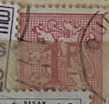
| SOURCE | TITLE| IMAGE MATCH | click to source page |
| www.ebay.com | Belcique Belgie Foreign 1f Stamp Used - #A101 | eBay | 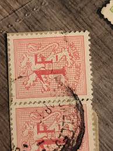 |
| www.ebay.com | Belgium - 1951 - 1Fr - New values - Small Format (21 x 25 mm ... | 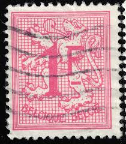 |
| www.ebay.com | Belgie Belgique Foreign 1f Red Stamp Used - #A271 | eBay | 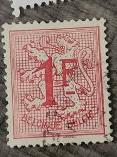 |
| findyourstampsvalue.com | Lion Rampant 1fr Rose stamp price, value | 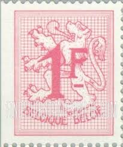 |
| www.ebay.com | Belgium 1974 (1728) Cipher | eBay | 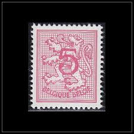 |
| www.etsy.com | Stamp Art, Red, Coat of Arms, 1 Franc, Belgium, Used Stamps ... | 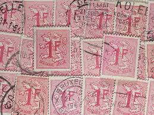 |
| www.hipstamp.com | Belgium 420: 1f Lion Rampant, used, F | Europe - Belgium ... | 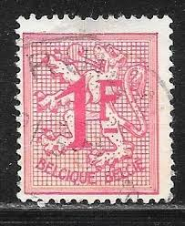 |
| www.alamy.com | A first class stamp hi-res stock photography and images ... | 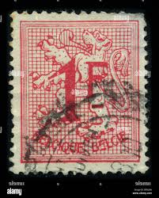 |
| www.shutterstock.com | Belgium Circa 1951a Stamp Printed Belgium Stock Photo ... | 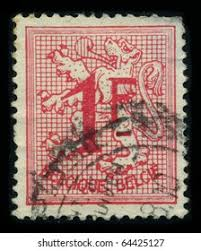 |
| www.hipstamp.com | Belgium 1951 Sc#420 SG#1350 1f Red Heraldic Lion Rampant ... | 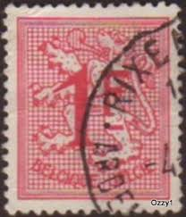 |
| huntingtonstampandcoinshop.com | #645 2 cent Valley Forge. Plate Block #19496. Mint F/VF LH in ... | 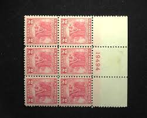 |
| www.dreamstime.com | Stamps Issued in Austria Shows Equestrianism and Horse ... | 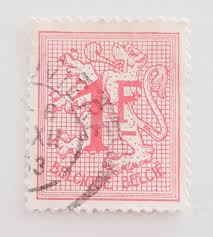 |
| www.ebid.net | Belgium 1951 - SG1350 - 1f red - The Belgian Lion - used 3 ... | 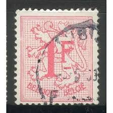 |
| www.dreamstime.com | Belgium - Stamp 1907: Standard Edition, Shows Coat of Arms ... |  |
| www.etsy.com | 1867 Bavaria 3 Cent Bayern Kreuzer Postage Stamp Scott # 16 ... | 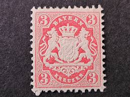 |
| www.delcampe.net | Belgium - RARE 1F+20C BELGIQUE BELGIE BELGIUM STAMP TIMBRE | 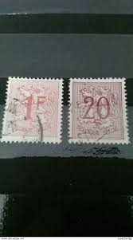 |
| www.alamy.com | Belgium Heraldic Lion Definitive Vintage Postage Stamp ... | 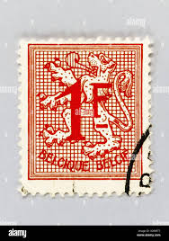 |
| www.leboncoin.fr | Timbre oblitéré Belgique , België , 1F - Collection | 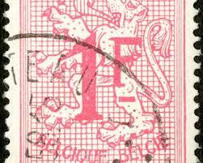 |
| www.ebay.com | Belgie Belgique Foreign 1f Red Stamp Used - #A332 | eBay | 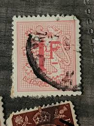 |
| www.mysticstamp.com | 680 - 1929 2c Battle of Fallen Timbers - Mystic Stamp Company | 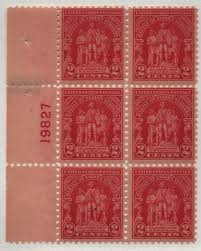 |
| www.flickr.com | ANY PHOTOS ALL THE TIME!!!! | Flickr | 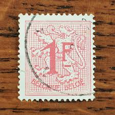 |
| aukro.cz | Belgie 1912 Mi 91 státní znak lev, 92 | Aukro | 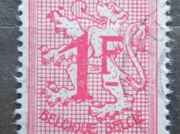 |
| en.todocoleccion.net | bélgica 1962, gérard mercador - Buy Antique stamps of ... | 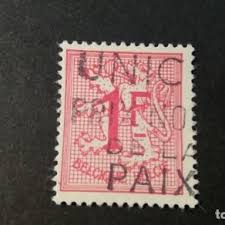 |
| worldstampsproject.org | Territory of the Saar Basin (Saargebiet) – Official Stamp ... | 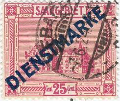 |
| www.kitantik.com | Belçika Pulu - Belgium Stamp - Mektup Zarfından Kesilmiş ... | 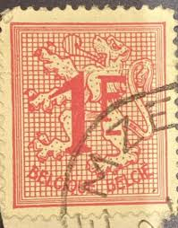 |
| www.allnumis.com | 1 Franc 1977 - Heraldic Lion, Coat of Arms - Circulation ... | 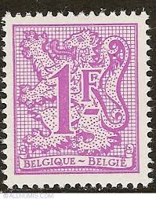 |
| www.reddit.com | Penny Red Brown 1841 : r/stampcollecting | 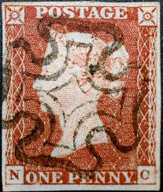 |
| www.youtube.com | Old/Rare Stamps From Portugal - YouTube | 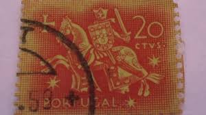 |
| www.mgrove.com | 1118:: 2 Stamps, 1955, Iran, Persia, lion with sword, Sc#RA4 ... | 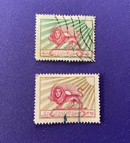 |
| www.tambrestan.com | 1 عدد تمبر سری پستی - مبالغ جدید - 1Fr - بلژیک 1951 | 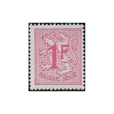 |
| findyourstampsvalue.com | Value of Belgium number on heraldic lion 1F stamps | 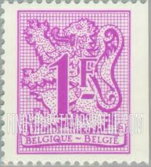 |
| www.linns.com | On eve of independence, Finland gave thought to stamps | 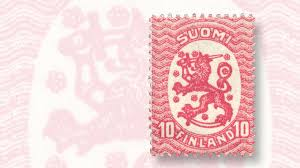 |
| www.allnumis.com | 1 Franc 1951 - Heraldic Lion, Coat of Arms - Circulation ... | 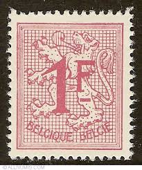 |
| www.ebid.net | Belgium 1951 Heraldic Lion 20c Used Stamp Numeral on eBid ... | 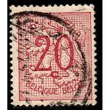 |
| therainkey.com | Belgium 1f Coat of Arms – RK-WS-2369 – The RainKey | 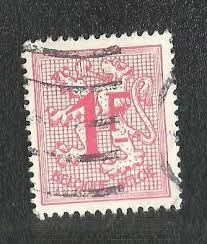 |
| thephilately.com | Tuscany Stamps for Sale – Rare Italian States Issues (1851–1860) | 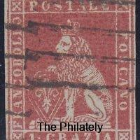 |
| www.osta.ee | Belgia " NUMBRID " 1959/73 (247949263) - Osta.ee | 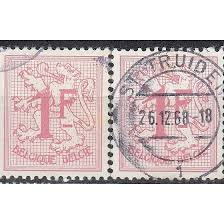 |
| www.hipstamp.com | Belgium 407 Lion Rampard | Europe - Belgium & Colonies ... | 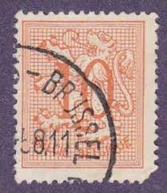 |
| www.pinterest.com | Group Of Interesting Old Postage Stamps | 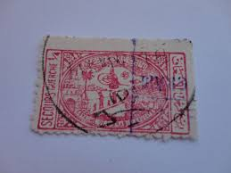 |
| www.todocoleccion.net | bégica 1951. básico: león heraldico, 1 frnaco - Compra venta ... | 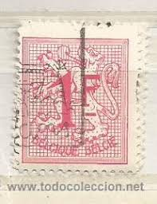 |
| js.997788.com | 希腊邮票----旅游风光（信销票）_欧洲邮票_泓悦文化【7788旧书网】 | 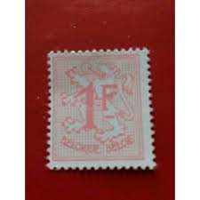 |
| deqistamps.com | Deutsche Reich postage stamp year 1920 – 2.5M -purple brown | 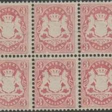 |
| www.kitantik.com | Belçika Pulu - Belgie Stamp - Mektup Zarfından Kesilmiş ... | 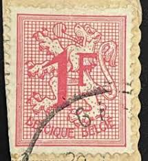 |
| www.bobshop.co.za | Belgium - Belgium Selection. Mainly VFU. Scarce. Hi Cat ... | 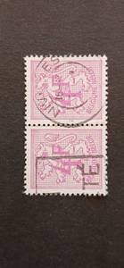 |
| www.etsy.com | 1899 Netherlands 5c Stamp: Queen Wilhelmina Fur Collar Issue ... | 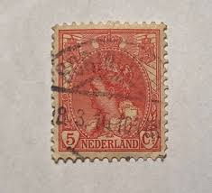 |
| aukro.cz | Belgie 1960 - Mi.891Xa Lvi | Výsostné znaky | Čísla | Aukro | 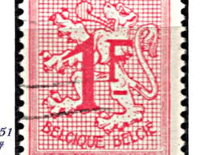 |
| www.youtube.com | 11. Rare and valuable stamps of Germany that do not cost a ... | 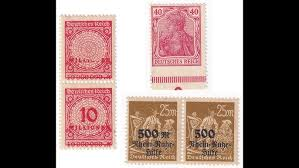 |
| www.mysticstamp.com | 1071 - 1955 3c Fort Ticonderoga - Mystic Stamp Company | 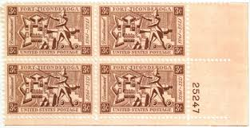 |
| www.facebook.com | What is the identification and value of a 1916 Austria stamp ... | 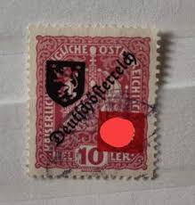 |
| www.postbeeld.com | Stamps from Finland - PostBeeld - Online Stamp Shop - Collecting | 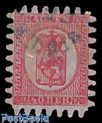 |
| vegas-stamps-hobbies.com | Vegas Stamps and Hobbies, Inc. Of Saint Louis – Vegas Stamps ... | |
| www.usa-stamps.com | USA Stamps | Browse USA Stamps | Year Sets Collection | |
| stampforgeries.com | Stamp forgeries of Finland 1860-66 | Stampforgeries of the World | |
| unc.ua | Марка Бельгия 1951 стандарт 1 франк фауна лев гаш купить на ... | |
| en.wikipedia.org | Philately - Wikipedia | |
| live.dumoart.com | PERSIAN 9CH.STAMP INVERTED CENTER RARE, CROWN ABOVE 'WALKING ... | |
| riversidestamps.com | Suspect Scott #491 | |
| www.alamy.com | Belgium stamp hi-res stock photography and images - Alamy | |
| www.ebay.com | Belgium Postage ~ Lion Crest ~ 20FR Red Stamp ~ Posted/Used ... |